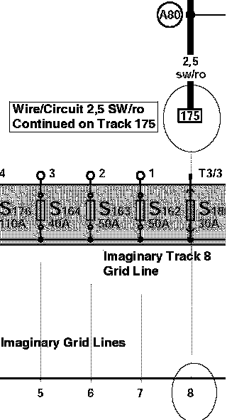
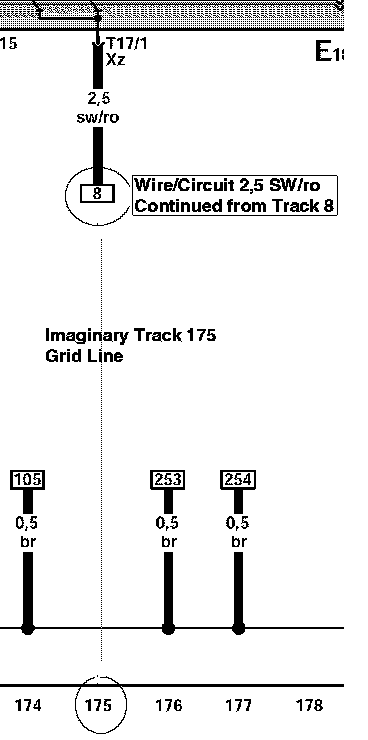

How to Use Track Diagrams

WHAT ARE TRACKS?
Tracks are navigational aids, like the grid lines on a map, but they are invisible on the diagrams. They are only identified by numbers at the bottom of the diagram.
The diagram wires/circuits are laid out over these imaginary vertical lines, and each diagram is identified by the range of tracks it is laid over, not by the diagram's contents (i.e. Track 1-14, Track 15-28, and so on).
HOW DO THE WIRES/CIRCUITS WORK WITH THE TRACKS?
Wires/Circuits that do not originate/terminate on the same diagram will have a notation of where they are coming from/going to at either end.
Wires/Circuits entering/leaving the diagram in a horizontal direction will pick up again on the previous/next diagram in the series.
However, wires/circuits traveling the diagram in a vertical direction are following the tracks, and when they enter/leave a diagram they could be skipping numerous diagrams in the series before picking up again on the destination diagram. When these wires/circuits enter or leave a diagram, the track number of the diagram they came from/go to will be shown within a continuation reference frame/box.
HOW DO I NAVIGATE THE DIAGRAMS VIA THE TRACK NUMBERS?
Track 1-14:

Assume you are tracing the wire/circuit identified by its size and color as 2,5 sw/ro on the diagram named Track 1-14.
This wire/circuit is running on track 8 of the diagram and terminates at the box labeled 175. To continue tracing this wire/circuit, you must now go to Track 175, which is located within the diagram named Track 169-182.
But before going to the diagram named Track 169-182, again make note of the current track that you are leaving, which is Track 8.
Track 169-182:

After arriving at the diagram named Track 169-182, locate track 175 at the bottom of the diagram.
Follow the imaginary track 175 grid line toward the top of the diagram looking for a box labeled 8 (the track you are coming from).
When you locate the box labeled 8, you have picked up the continuation of wire/circuit 2,5 sw/ro and can continue to trace it until it terminates at either a component or at yet another continuation reference box.
NOTE: It is equally important that you always know the track that you are coming from as well as the one you are going to.